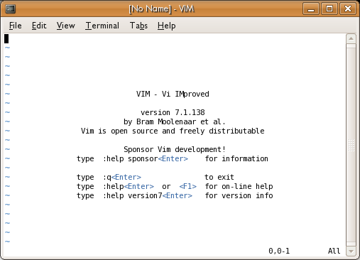
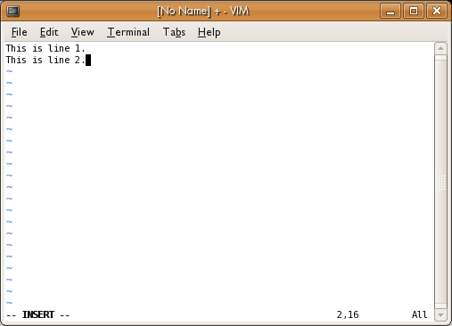

Vi is a very powerful command-line text editor. It's used for everything from quick fixes in configuration files to professional programming and even for writing large, complex documents like this book. It's popular on the one hand because it's fast and light-weight, and you can accomplish a lot with a few keystrokes. On the other hand it's also powerful: highly configurable, with many built-in functions.
Vim is an enhanced version of Vi, offering a lot of features that make life easier for both the novice and expert (Vim stands for "Vi IMproved"). On many modern systems, Vim is installed as the default version of Vi. So if you invoke the vi command you actually run Vim. This is usually not confusing, because everything in Vi works in Vim as well. We will look at Vim in this chapter, but if your system has Vi you can apply these techniques, just replace any reference to vim in the commands to vi.
The best feature about Vim/Vi is that it's shipped with virtually all GNU/Linux variants by default. Once you learn Vim, whenever you are, you can have the power of efficient editing.
The main drawback of Vim is, as for Emacs (another command line editor), the learning curve. The keyboard short-cuts can be daunting to learn.
Fortunately, you can work around those drawbacks by using a graphical version of Vim (GVim) with all the buttons and menus for more graphical users. You can also try easy-Vim, with Notepad style editing.
These simplified versions of Vim reduce the learning curve a lot and expose less advanced users to the power of efficient editing, which in turn increases one's will to learn a more powerful editor.
To open Vim and begin creating a new text file, get a command-line open and type:
$ vim
This presents you with a blank screen, or (if the program running is Vim) a screen of information looking something like this:

If you want to open an existing file, just specify it on the command line as an argument. For instance, the following opens a file called /etc/fstab:
$ vim /etc/fstab
This file already exists on most GNU/Linux systems, but if you open a non-existent file, you'll get a blank screen. The next section shows you how to insert text; when you're finished you can then save the file.
Whether you have a blank screen or a file with text in it, you can add text by entering what's known as edit mode. Just press i. You should see this on the bottom of the screen:
-- INSERT --
Whenever this appears on the bottom of the screen, you are in edit mode. Whatever you type becomes part of the file. For instance, try entering "This is line 1." Then press the Enter key and enter "This is line 2". Here's what this fascinating contribution to literature looks like in Vim:

When you are finished inserting text, press the Esc (Escape) key to leave edit mode; that puts you in normal mode.
Vim, like every editor, keeps track of where you are and shows a cursor at that point, which may look like an underline or a box in a different color. In edit mode, you can backspace to remove characters. Vim also allows you to move around using arrow keys and edit the whole document freely. But normal Vi doesn't let you move around; it restricts you to adding text or backspacing to remove it.
In normal Vi, if you want to go back over what you edited, or move to another place in the file, you must press the Esc key, move to the place where you want to insert text, and enter edit mode again. This may seem cumbersome. But Vi provides so many alternate ways of moving around and adding text that you'll find, with some practice, that it's no barrier to productivity. As already mentioned, Vim lets you move around freely and edit the whole file when you're in edit mode--but you'll find yourself leaving edit mode often in order to make use of Vim's powerful commands.
To practice moving around in a file, you can press the Esc key to get out of edit mode. If you have only a small amount of text in the file, you may prefer to find another text file on your system that's larger, and open that. Remember that when you open a file you're in normal mode, not edit mode.
To move around use the arrow keys.
To jump to a specific line use the colon button followed by a line number. The following jumps to line 20:
:20
You can move quickly up or down a text file by pressing the PgUp and PgDn keys.
Search for text by pressing the slash key (/) and then typing the text you want to find:
/birthday party
You can simply repeat the / key to search for the next occurrence of the string. The search is case-sensitive. To search backward, press the question-mark key (?) instead of the slash key.
If you're in edit mode, you can save your changes by pressing Esc to go to normal mode, typing :w and pressing the Enter key. This saves your changes to the file you specified when you opened Vim.
Note: Vim, by default, does not save a backup of the original version of the file. Your :w command deletes the old contents forever. Vim can be configured to save backups, though.
If you opened Vim without specifying a file name, you receive an error message when you press :w:
E32: No file name
To fix this, specify :w with a filename:
:w mytestfile.txt
This must also be followed by the Enter key.
To exit Vim, press :q. If you have unsaved text, you receive an error message:
E37: No write since last change (add ! to override)
Like most word processors, Vim tries to warn you when you might make a mistake that costs you work. As the message suggests, you can abandon your text and exit by pressing :q!. Or use :w to save your changes and then enter :q again. You can combine writing and quitting through any of the following:
:wq (followed by Enter) :x (followed by Enter) ZZ
Sometimes it's convenient to use your mouse with Vim, to select text or even just to quickly position the cursor. To enable this mode pass Vim the command:
:set mouse=a (followed by Enter)
Since version 7 Vim has had the (rarely noticed) feature of tabs, that's right, just like those in Firefox or other tabbed applications.
To use tabs in Vim pass the command :tabnew <file>. For instance, to open up a file foo.txt so that it appears in a tab I would:
:tabnew /path/to/foo.txt (followed by Enter)
To move back and forth between this file and the one you were working on previously, use the keys g and then t. To help remember this key combination you can think of "g" as in goto and "t" as in tab. You can open up as many files as you like into tabs and use gt to traverse between them. If you have enabled mouse input (see "Using your mouse with Vim", above) then you can simply click on the tab itself.
You can close a tab in the same way you would a normal file, with :wq to commit the changes, or just :q to close without committing.
Vim uses a mode called Visual Mode to select text for copying to the 'buffer' (think of a buffer as a clipboard) to be used elsewhere.
To activate Visual Mode, just hit the v key on your keyboard and hit enter. Using the cursor keys (arrow keys) select the text you would like to copy or cut.
To copy the selected text, hit the y key ('y' stands for "yank"). Now, use the cursor keys and move to a new location in your document. Now press the p key ('p' stands for "put" but you can think of it as "paste") to place the text in the given position.
To cut the selected text, hit the x key (who knows what 'x' stands for!). Now move to a new position in your document and press p to "put" the text in that place.
Sometimes it's useful to select text in lines or columns. Experiment with these other forms of Visual Mode by holding SHIFT+v to select whole lines or CTRL+v to select columns. Before you know it you'll be working just as quickly as you would with a mouse in a word editor!
Practice!
There has been error in communication with Booktype server. Not sure right now where is the problem.
You should refresh this page.